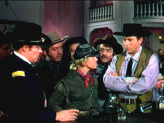

| Calamity Jane/ B+, C+ |
| Warner/1953101/FS 1.33 |
The cloud of glittering box office gold dust had
barely settled on Annie
Get Your Gun before Warner Brothers pulled the trigger on their
own gun-toting musical Western. The result, Calamity Jane, is a
rip-roaring, raucously delightful success. The parallels between the two
films are obvious and the adversarial relationship between Calamity Jane
and Will Bill Hickok clearly echoes the central Annie Oakley/Frank Butler
rivalry of the earlier film. Calamity Jane scored another coup by
getting Annie star Howard Keel to sing and spat with Doris Day's
Calamity.
The center of Deadwood City is Millie's saloon
where the almost exclusive male audience hungers after female company. Calamity
Jane, the buckskin gal with a man's swagger and a talent for
stretching the truth an Indian or two trades banter with Wild Bill Hickok
while she pines for Lt. Daniel Gilmartin. When Milly imports singer
Francis Fryer from Chicago, he's up against the bar when Fryer turns out
to be a man. Drag simply won't work, but it's Calamity Jane to the rescue.
She volunteers to go to Chicago to recruit Adelaide Adams, the stage star
who has captured the hearts of men all over the country.
 |
|
The men in Calamity's life.
©Warner
|
Calamity's gun sights are slightly bent in
Chicago and she brings back maid Katy Brown in Adelaide Adams' clothes by
mistake. The men in Calamity's life, as well as every other man in town,
fall head over heels for the entertainer. Between the gunshots, dance hall
numbers, moonlit rides, and stage coach rumbling, the romantic targets
must line up logically before the sun sets on Deadwood.
The musical numbers are outstanding including the
romping rocking Deadwood Stage, the charming Just Blew in From
the Windy City, the romantic ballads Higher than a Hawk
and the Academy Award winning Secret Love. Ironically, the later
song, perhaps Day's biggest recording hit, fails to have the same seamless
plot integration that the other musical numbers achieve. The winning
Day/Keel duet, I Can Do Without You, clearly parallels the thematic
thrust of I Can Anything Better Than You in Annie Get Your
Gun. The scoring is exquisite integrating the music of the songs
to facilitate the scene transitions. The film finishes with a beautiful
medley of the major songs. It's a high-spirited from the classic era.
Calamity Jane not only delivers the music with
panache and verve, every scenes provides consistently delightful humor.
Day and Howard Keel are a charming pair and equally adept at putting over
the musical numbers. Day gives an extraordinary high-energy performance.
She leaps on the bars with a dancer's grace, postures with a tomboy
innocence, and croons melodiously. Keel is an excellent musical
comedy star. he plays bigger than life with grand strokes and of course,
he's a terrific singer.
Director David Butler shoots from the hip and the
result is a crisply delivered narrative with perfectly in synch musical
productions. Jame O'Hanlon whose wrote the final script for The Harvey
Girls provides a charming framework for Butler to build his film.
The charming script. Simple set-up and nice medley of characters.
The DVD fails to deliver all the Technicolor celebration of Calamity
Jane is her best clothes. It's still a wonderful experience, but it's
somewhat diminished by the less than pristine source elements. The colors
are slightly washed out. The print is mostly clean with almost an absence
of grain. Black level is fine. There are a few shots that are somewhat
soft, otherwise this is a crisply detailed transfer. There is some element
damage in the bar scene and minor misregistration of the Technicolor
elements shows up here and there. The score is given a clean mono delivery
on the DV. |
|
|
|

The Movie Poster
Archive includes extensive poster images from the films of stars like
Susan Hayward, Kirk Douglas, Katharine Hepburn and many more. Our
featured star is Doris Day.

Some like it Hot/ A, C

Marilyn Monroe wriggles and shakes her way as Sugar Cane to iconic
perfection. Bily Wilder and co writer Diamond concoct some of the
snappiest, slightly licentious, dialogue this side of Preston Sturges.


The National Film Preservation Foundation (NFPF) is the
nonprofit organization created by the U.S. Congress to save America's film
heritage.
ISF Monitor
Calibrations in the Tristate New York area. Lots of hardware
info and frequent hardware peaks from video expert Kevin Miller. They may
be judgmental, but that's the point, isn't it. Lots of DVD reviews plus
news and more.
 The Cinematheque is a cultural,
arts organization that programs year-round specialty film series at the
newly renovated, landmark 1922 Egyptian Theatre on
Hollywood Boulevard! The Cinematheque is a cultural,
arts organization that programs year-round specialty film series at the
newly renovated, landmark 1922 Egyptian Theatre on
Hollywood Boulevard!
 Brad Lang
continues to add more interesting material to the extensive collection at Classic Movies.
Everything from actors and actress to your favorite directors is linked at
the site. Brad Lang
continues to add more interesting material to the extensive collection at Classic Movies.
Everything from actors and actress to your favorite directors is linked at
the site.
|